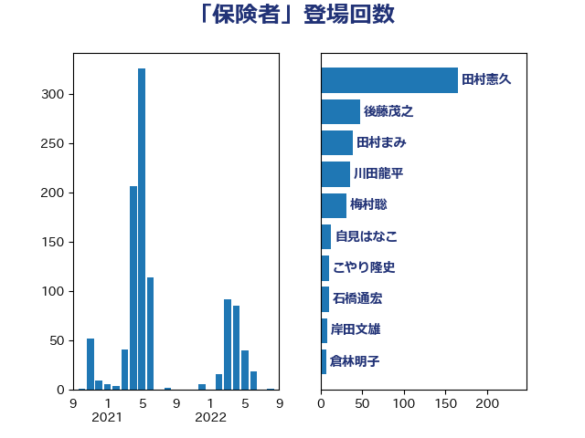

単語「保険者」

| 田村憲久 | 自由民主党 | 165 回 |
| 後藤茂之 | 自由民主党 | 48 回 |
| 田村まみ | 国民民主党 | 39 回 |
| 川田龍平 | 立憲民主党 | 36 回 |
| 梅村聡 | 日本維新の会 | 31 回 |
| 自見はなこ | 自由民主党 | 13 回 |
| こやり隆史 | 自由民主党 | 10 回 |
| 石橋通宏 | 立憲民主党 | 10 回 |
| 岸田文雄 | 自由民主党 | 8 回 |
| 倉林明子 | 日本共産党 | 7 回 |
| 矢倉克夫 | 公明党 | 7 回 |
| 大島敦 | 立憲民主党 | 6 回 |
| 山本博司 | 公明党 | 6 回 |
| 打越さく良 | 立憲民主党 | 6 回 |
| 本田顕子 | 自由民主党 | 6 回 |
| 深澤陽一 | 自由民主党 | 6 回 |
| 足立康史 | 日本維新の会 | 6 回 |
| 伊佐進一 | 公明党 | 5 回 |
| 中島克仁 | 立憲民主党 | 4 回 |
| 伊藤渉 | 公明党 | 4 回 |
| 古賀篤 | 自由民主党 | 4 回 |
| 平木大作 | 公明党 | 4 回 |
| 後藤祐一 | 立憲民主党 | 4 回 |
| 東徹 | 日本維新の会 | 4 回 |
| 池下卓 | 日本維新の会 | 4 回 |
| 菅義偉 | 自由民主党 | 4 回 |
| 西銘恒三郎 | 自由民主党 | 4 回 |
| 音喜多駿 | 日本維新の会 | 4 回 |
| 仁木博文 | 無所属 | 3 回 |
| 佐藤英道 | 公明党 | 3 回 |
| 宮本徹 | 日本共産党 | 3 回 |
| 山添拓 | 日本共産党 | 3 回 |
| 石田昌宏 | 自由民主党 | 3 回 |
| 福島みずほ | 社会民主党 | 3 回 |
| 三原じゅん子 | 自由民主党 | 2 回 |
| 吉田とも代 | 日本維新の会 | 2 回 |
| 国光あやの | 自由民主党 | 2 回 |
| 塩田博昭 | 公明党 | 2 回 |
| 山崎正恭 | 公明党 | 2 回 |
| 平沢勝栄 | 自由民主党 | 2 回 |
| 森田俊和 | 立憲民主党 | 2 回 |
| 櫻井周 | 立憲民主党 | 2 回 |
| 牧島かれん | 自由民主党 | 2 回 |
| 田中健 | 国民民主党 | 2 回 |
| 田村智子 | 日本共産党 | 2 回 |
| 白石洋一 | 立憲民主党 | 2 回 |
| 石井章 | 日本維新の会 | 2 回 |
| 萩生田光一 | 自由民主党 | 2 回 |
| 長友慎治 | 国民民主党 | 2 回 |
| 麻生太郎 | 自由民主党 | 2 回 |
| 上田英俊 | 自由民主党 | 1 回 |
| 丸川珠代 | 自由民主党 | 1 回 |
| 伊藤孝恵 | 国民民主党 | 1 回 |
| 佐藤啓 | 自由民主党 | 1 回 |
| 加藤勝信 | 自由民主党 | 1 回 |
| 古川俊治 | 自由民主党 | 1 回 |
| 吉川ゆうみ | 自由民主党 | 1 回 |
| 吉田久美子 | 公明党 | 1 回 |
| 吉田統彦 | 立憲民主党 | 1 回 |
| 吉良よし子 | 日本共産党 | 1 回 |
| 塩川鉄也 | 日本共産党 | 1 回 |
| 岸真紀子 | 立憲民主党 | 1 回 |
| 平井卓也 | 自由民主党 | 1 回 |
| 徳永久志 | 立憲民主党 | 1 回 |
| 橋本岳 | 自由民主党 | 1 回 |
| 武井俊輔 | 自由民主党 | 1 回 |
| 清水真人 | 自由民主党 | 1 回 |
| 清水貴之 | 日本維新の会 | 1 回 |
| 田島麻衣子 | 立憲民主党 | 1 回 |
| 石井苗子 | 日本維新の会 | 1 回 |
| 稲富修二 | 立憲民主党 | 1 回 |
| 藤川政人 | 自由民主党 | 1 回 |
| 西村智奈美 | 立憲民主党 | 1 回 |
| 近藤和也 | 立憲民主党 | 1 回 |
| 鈴木俊一 | 自由民主党 | 1 回 |
| 長妻昭 | 立憲民主党 | 1 回 |